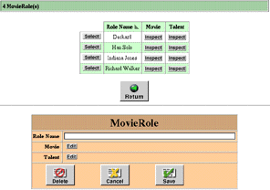

PATH
WebObjects 4.0 Documentation >
WebObjects Tools and Techniques
 Table of Contents
Table of Contents  Previous Section
Previous Section
Master-Detail Pages
Master-detail pages put a select component and an edit component on the same page, thereby allowing users to select and edit records without having to go to another page. The following is an example of a master-detail page:

To use a master-detail page, click Select next to a record in the list component. The information in that record is written to the edit component. See "Inspect and Edit Pages" for usage information.
The master-detail page does not appears under Tasks in the WebAssistant (expert mode). This is because it is defined as a type of list page (BASMasterDetailPage) of the list task.
Table of Contents  Next Section
Next Section